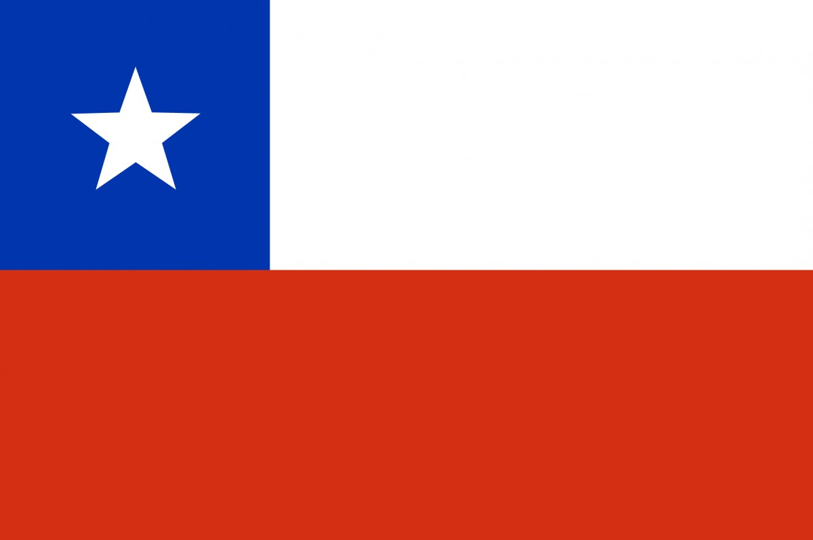

My name is Gino Rojo, and I live in La Serena, Chile. I enjoy sports, especially tennis, and have a passion for music, playing instruments like the drums and guitar. Photography and traveling are also among my favorite hobbies, as I love exploring and capturing beautiful moments.

La Serena, Chile

Chile is a long, narrow country in South America, bordered by the Pacific Ocean and Andes Mountains. Known for its diverse landscapes, it ranges from the Atacama Desert to Patagonia’s glaciers. Its economy thrives on copper mining, agriculture, and wine production. Santiago is the bustling capital and cultural center.